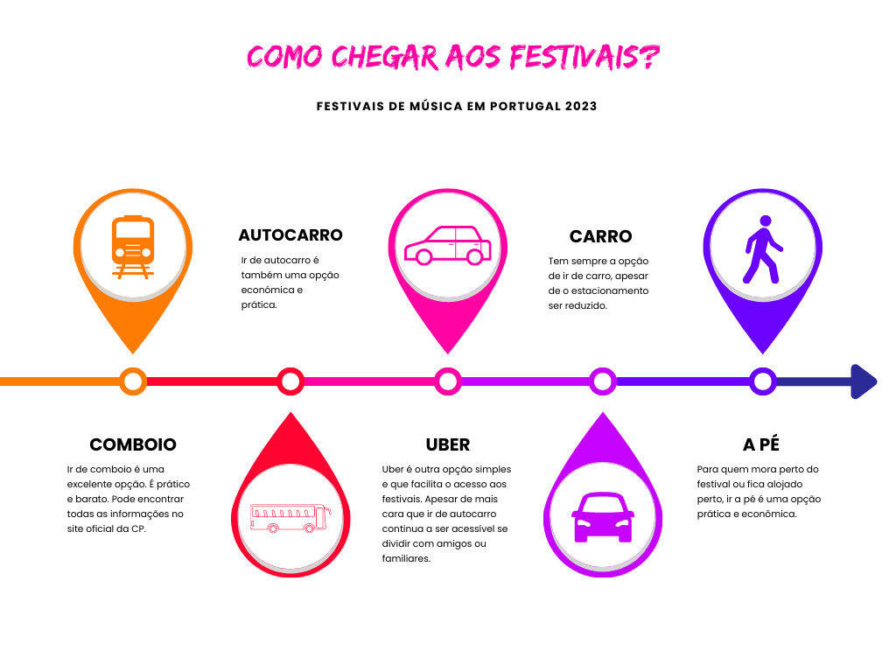

O calor chega e com ele traz a febre dos festivais de música de verão
Em 2023 estão de regresso 37 festivais de música, de norte a sul do país com diferentes estilos músicais desde música pop à música clássica.
Em Portugal a época de festivais começa quase ao mesmo tempo que a época balnear, contando com cerca de 28 festivais entre junho e setembro de norte a sul do país.
O verão traz com ele calor, praia, convívios, diversão mas também vários festivais com artistas nacionais e internacionais, com diferentes genéros musicais desde jazz, música eletrónica, pop, blues, rap e música clássica. Apesar destes eventos serem mais comuns no verão, ao longo do ano pode ainda encontar 9 festivais.
O mês com mais festivais é Julho com 15 festivais de música.
No mês de junho temos o Sumol Summer Fest 2023, o Afro Nation 2023, Jardim Sonoro 2023 e o Primavera Sound 2023.
Já no mês de Julho temos, a Nova Era Beach Party, o Nos Alive, o Rolling Loud Portugal, o Super Bock Super Rock, o Boom Festival, EDP Cool Jazz, Summer Opening, RFM Somnii, MEO Marés Vivas, Sound Waves, FMM Sines, Santa Maria Blues, Laurus Nobilis, Woodrock Festival, ZigurFest.
Agosto conta com 8 festivais de música, o Vodafone Paredes de Coura, MEO Sudoeste, Sol da Caparica, Neopop Festival, EDP Vilar de Mouros, SonicBlast Fest, Vagos Metal Fest, Festival do Crato.
Para fechar o verão da melhor forma temos ainda o Douro & Porto Wine Festival em Lamego com uma vista incrível onde promove o que de melhor tem a região do Norte e Douro.
Em Portugal a época do verão é a altura do ano com mais festivais de música. Contudo ao longo do ano temos ainda outros festivais de música desde Metal a música Pop. Contámos este ano com o Hard Metal Fest Mangualde em Janeiro, o ID NO LIMITS e o Courage Clube em Fevereiro, o Tribute of Techno em Março, o SWR Barroselas Metalfest, o Walk & Dance e o Sónar Lisboa em Abril, o North Music Festival em Maio e ainda para fechar o ano o Festival Authentica em Dezembro.A tendência é utilizar como cabeça de cartaz artistas internacionais e nacionais em ascensão e com músicas trend. Este ano com grandes nomes internacionais como cabeça de cartaz.
Atualmente existem várias opções mais esconómicas, práticas e sustentáveis para chegar até ao recinto dos festivais.
